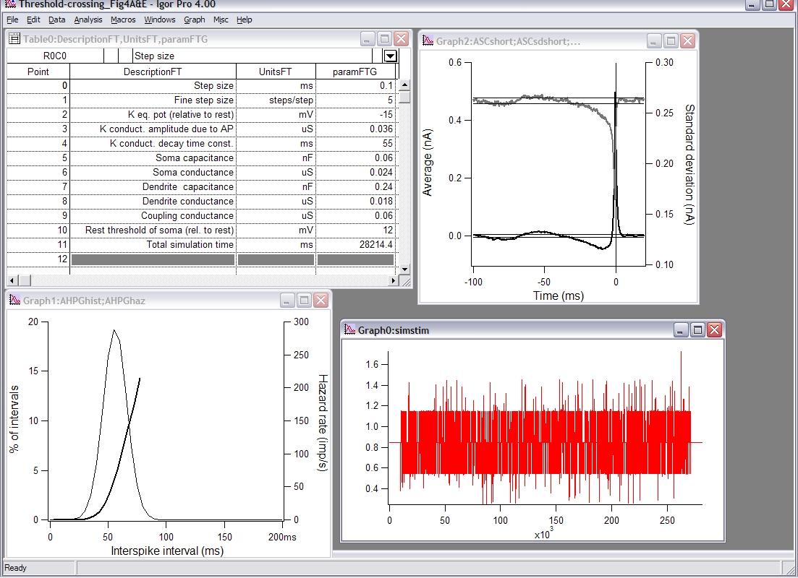

This is the readme for the IGOR Pro experiment file associated with Powers RK, Dai Y, Bell BM, Percival DB, Binder MD (2005) Contributions of the input signal and prior activation history to the discharge behaviour of rat motoneurones. J Physiol 562:707-724 Usage: merely open the binary file, Threshold-crossing_Fig4A_E, in IGOR Pro and it will reproduce figures 4A, 4E from the paper:  See text supplied when the experiment is opened for more information.